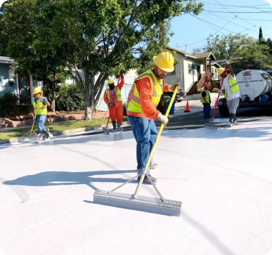

Do you know what heat islands are?
Heat islands are urban areas that experience significantly higher temperatures than surrounding rural areas, due to urbanization and lack of vegetation.
What are the causes?
Heat islands are caused by the absorption of heat by surfaces such as concrete and asphalt, in addition to the lack of green areas and the emission of heat from vehicles and buildings.
How to combat the effect?
Our goal is to create an automated and intelligent system that monitors, analyzes and implements effective solutions to reduce the impact of heat islands in cities.
Solutions
1. AI Data Monitoring and Analysis Platform
IoT sensors collect real-time weather data, analyzed by AI to identify affected areas and predict heat spikes. The system automatically adjusts the use of resources such as irrigation and cooling.
2. Smart Green Infrastructure
Green roofs with automated irrigation use soil and climate sensors. AI algorithms select optimal plants to optimize cooling and water efficiency.

3. Smart Paving
Thermoregulating floors reflect sunlight like in Los Angeles, reducing heat absorption. Sensors monitor temperature, adjusting materials as needed, with automated maintenance.
Is it possible for the population to help reduce this problem?b
The population can help reduce heat islands! Here are some ways to take action:
1-Tree
Planting.
2-Reflective Materials.
3-Sustainable Transport.
4-Awareness.
The consequences for the population
The consequences of heat islands are local and global. Locally, they affect the quality of life, increasing temperatures and causing health problems. Globally, they contribute to climate change and intensifying extreme events such as droughts and storms.
If nothing is done, what are the possible consequences?
If nothing is done, possible consequences include:
Public Health:Increase in heat-related
illnesses.
Economic Impacts: Overload on electrical grids and economic crises.